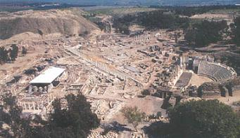
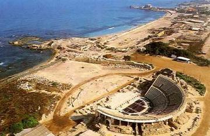
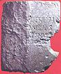
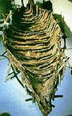
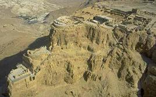
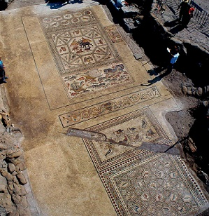

|
Israel
Romano
Las Legiones de Pompeyo conquistaron la región de Judea
en el 63 a.e.c. Herodes fue coronado como rey por el Senado de Roma, gobernando
entre el 37 y el 4 a.e.c. Tras su muerte la actual Israel pasó a formar parte de
la provincia romana de Judaea.
Escitópolis (Beth-Shean),
la única ciudad al oeste del río Jordán
|
 |
La antigua Beit Shean, situada en el Valle del Jordán a unos 30km.
al sur del Mar de Galilea. Habitada desde la edad del bronce.
El periodo romano:
Era la ciudad más grande de la Decápolis, Durante el reinado de los emperadores
Adriano, Antonio Pío y Marco Aurelio en el siglo II, tuvo su mayor época de
esplendor. En el valle al suroeste del Tell, se creó un nuevo centro cívico. Con
sus porticadas, el templos, la basílica, el ninfeo, termas, teatro y el
anfiteatro.
Los principales materiales empleados en su construcción fueron el basalto y
piedra caliza. Muchos de los edificios resultaron dañados en el terremoto de
363. En el año 409, la ciudad fue nombrada capital provincial de la zona que
incluía la Galilea y el norte de Transjordania. |
Cesárea: de ciudad romana a fortaleza cruzada
|
 |
Cesárea se encuentra a orillas del Mediterráneo, aproximadamente a
mitad de camino entre Haifa y Tel Aviv.
La ciudad romana fue fundada por el rey Herodes en el siglo I, Cesárea recibió el nombre del
emperador César Augusto. La ciudad fue descrita por el historiador judío Flavio Josefo. Era una ciudad
amurallada, con el puerto más grande de la costa este del Mediterráneo llamado Sebastos, el nombre griego del emperador Augusto.
|
 |
Una inscripción en piedra de Cesárea, que menciona a Ponce Pilatos. El teatro
se encuentra en la parte sur de la ciudad. En las excavaciones del teatro se
encontró una piedra que muestra partes de una inscripción que menciona a "Poncio
Pilatos, procurador de Judea", y al Tiberium (el edificio en honor del emperador
Tiberio) que aquél construyera. |
|
El anfiteatro, que se encuentra en la costa sur de la
ciudad, Estaba orientado de norte a sur y medía 64 x 31m. Cuando se construyó tenía cabida para unos
8.000 espectadores; en el siglo I se añadieron nuevas localidades, que
incrementaron su capacidad hasta 15.000 espectadores. Durante el siglo II fue
reconstruido y adaptado para los usos más habituales de un anfiteatro.
El acueducto superior empieza en los manantiales ubicados unos 9 km. al noreste de Cesárea, a los pies del Monte Carmelo. Muchas inscripciones
en el acueducto atribuyen la responsabilidad de su mantenimiento a la II y X
Legiones.
|
 |
El barco romano del Mar de Galilea
El barco romano En el invierno de 1986, después de varios años de sequía, en el
Mar de se halló un barco de epóca romana.
Las medidas del barco es largo 8,2 m., ancho 2,3 m. y su profundidad 1,2 m. Fue
construido según el modo conocido como "casco primero", con una ensambladura de
alefriz y espigas, y realizado principalmente con tablas de cedro y marcos de
roble. Por las técnicas de construcción y dos vasijas de greda encontradas cerca
de él, los arqueólogos llegaron a la conclusión que el barco era del período
romano. Pruebas de carbono 14 confirmaron que el barco fue construido y
utilizado entre los años 100 a.e.c y el 70. |
Masada, "La fortaleza"
|
 |
Símbolo de la libertad y de la independencia de Israel.
Masada, “La fortaleza” es uno de los lugares históricos de Israel con mayor
interés arqueológico. Situada a orillas del Mar Muerto a 440 m sobre su nivel
con una situación geográfica de 32º55’ N, 35”4’ E; a 50 m sobre el nivel del
Mediterráneo, ubicada en un monte de 600 m de largo por 300 m de ancho.
Según los arqueólogos, Masada tenía una muralla de 6 m de alto por 4 m de
ancho y 1.400 m de largo.
El rey Herodes I “El Grande” la mandó construir durante el siglo aI a.e.c. En el año 70 Judea pasó a ser provincia romana. En el año 73 el
gobernador romano en aquellas tierras, Flavius Silva, marchó contra Masada con
la X Legión. Se instalaron en la falda del monte, montaron su
campamento y comenzó el asedio que concluyo con el suicidio
colectivo y el control romano de la meseta. |
Jerusalén
De época romana destacamos el Cardus
Maximus, la Casa Quemada, el Museo Arqueológico Wohl, los vestigios de la
Fortaleza Antonia, las puertas romanas bajo la actual puerta de Damasco y el
Museo.
A 12 km. al sur de Jerusalén, se localiza el Palacio del rey Herodes en el
Parque Nacional Herodium.
En octubre de 2017, un posible teatro
romano o bouleuterión ha sido hallado bajo el Muro de las Lamentaciones. Con un
aforo aproximadamente de unos 200 asientos, pero curiosamente fue abandonado
antes de ser usado. Datado en torno al siglo I.
Lod
En Lod se localiza la villa romana con
uno de los mosaicos romanos más completos y espectaculares del mundo. Datado a
finales del siglo III o comienzos del siglo IV y fue descubierto casualmente en
1996. En julio de 2018 un nuevo mosaico de gran colorido sale a la luz.
Foto: Niki Davidov, Israel Antiquities Authority

Sepphoris
A 6km de Nazaret se encuentra el yacimiento
arqueologico de la antigua Sepphoris, en el Parque nacional Zippori. De sus
monumentos destaca el teatro romano y varias viviendas con mosaicos, como la
villa de Dyonisus del siglo III y su famoso mosaico de la "Mona Lisa de
Galilea".
Hippos-Sussita
Hippos se halla en Israel en una colina con vistas al mar de
Galilea. Entre el siglo III a.e.c y el siglo VII, Hippos fue una prospera ciudad
greco-romana. Entre los hallazgos arqueológicos destaca una máscara de bronce de
Pan. En febrero de 2017 han salido a la luz un gran teatro y unos baños públicos
romanos.
********************
- En Tiberíades,
en junio de 2018, se ha hallado una cueva funeraria romana con inscripciones
griegas durante unas obras. Tiberíades fue fundada en el año 18 en honor del
emperador Tiberio.
- En febrero de 2021 al construir un
hospital, encuentran dos sarcófagos romanos en mitad del zoológico
Tel
Aviv-Ramat.
- En febrero de 2024, encuentran el
campamento de la Legión VI “Ferrata” a los pies de Tel
Megido. La Legión VI Ferrata estuvo aquí desde el 117-120 hasta
aproximadamente el año 300.
https://new.goisrael.com/
|